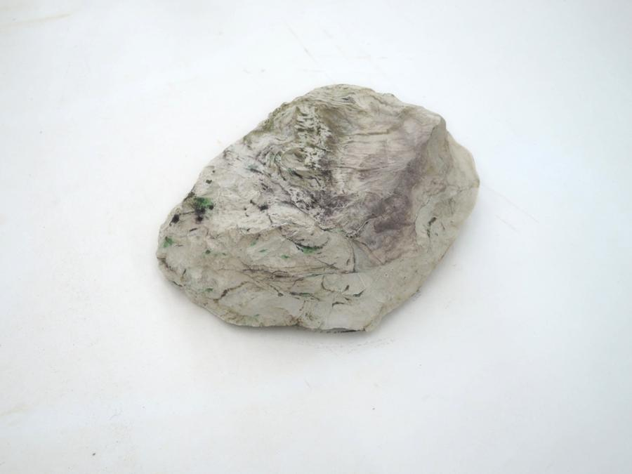
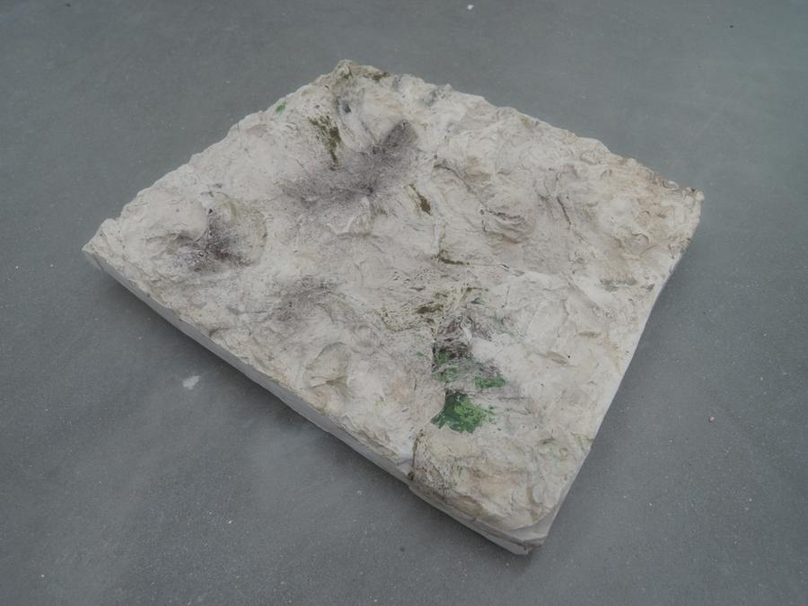

September - December 2021
Stone clashing video: 0:48 sec, Metal flower 20 x 20 cm, metal sculpture 20 x 25 x 35 cm , grafite drawing on cardboard 60 x 110 cm, ceramic flower 20 cm x 20 cm, grafite on paper 50 cm x 100 cm, mohair knit & drawing 25 x 50cm, mohair & alpaca wool knitted helmet, merino wool knitted white shoulder armor.
’Looping, loopin, loopings’ 2021
Research based project of four months exchange in Helsinki, Finland.
Supported by Gerrit Rietveld Academy.
This project started as an investigation on the relation between the natural behaviour of sound versus the responds of its environment. Trying to deconstruct the dualistic notion of noise and object as a matter and search for as in-between. What makes us think about what a contact is, about its experience and consequence, about what is connecting, what is touching and is being touched is a sonic thought. The stability of these contacts, their purpose, direction makes us rethink, and allows us to contemplate whether their misses and happenstance might provide a useful way to think about how things are.
↓ Click to open video

Other projects:
Plaster sculpting experiments
Size: 14 cm x 23 cm
Size: 7 cm x 14 cm


Size: 7 cm x 18 cm
Size: 20 cm x 25 cm

Sand cement sculpture Size: 12 cm x 25 cm

Sand cement sculpture Size: 45 cm x 55 cm